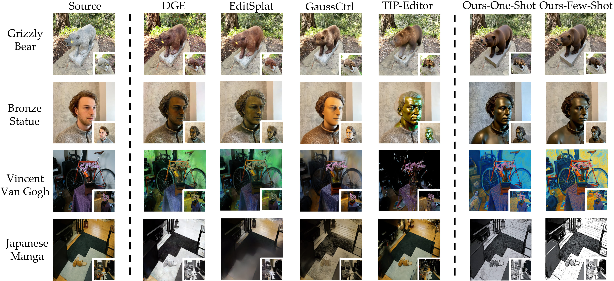
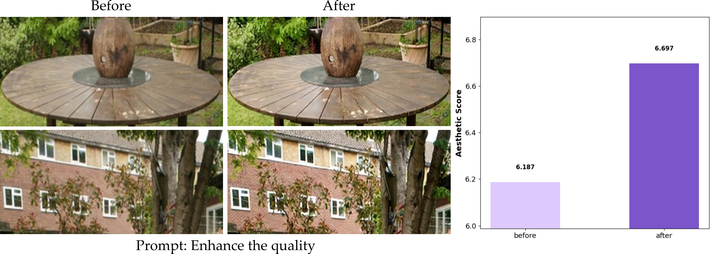

Comparisons with existing methods
Tinker achieves high-quality 3D editing results with only one or few inputs, even for scenes with substantial overall style changes, such as oil paintings or black-and-white comics. No per-scene finetuning is required.

Additional Features
Video Reconstruction
Tinker supports high-quality video reconstruction with only the first frame and video depth as inputs.
GT
Our Reconstruction

Enhancing 3DGS Quality
Tinker further supports enhancing the quality of 3DGS, as such quality improvements can be regarded as a specialized form of editing.
